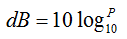
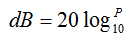
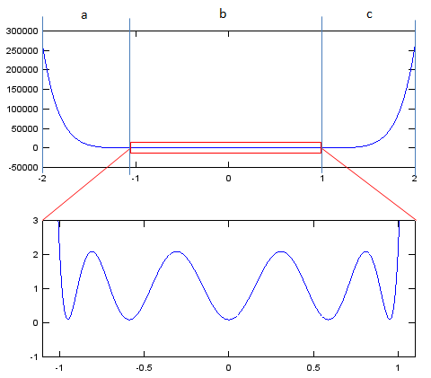
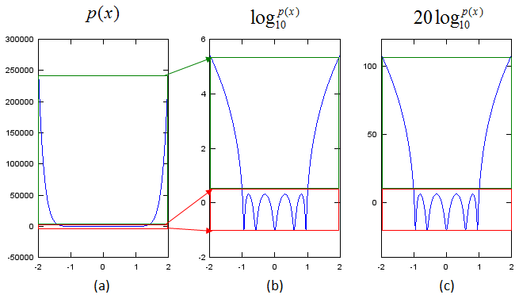
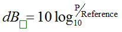
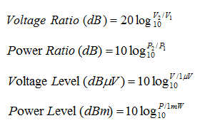

|
RF - dB, dBm, dBc Home : www.sharetechnote.com |
||||||||||||||||||||||||||||||||||||
|
dB is one of the most common measurement unit in RF area. The methematical definition of dB is as follows. It is just a number presented in log scale. So there is not many things I can say in terms of definition.
 or 
My personal question when I first see this unit was "Why they invented this kind of Log scale unit ?" (Actually you would have seen many other Log scale units in other area as well.. pH in chemistry is another example of log scale unit) To me, Log is seen as a magic lens that make small thing big and big thing small as illustrated below.
Then next question is "Why we need this kind of magic lens ?". The answer to this question is that we can visualize a set of data which has both very small values and large values at the same time. Let me give you an example as shown below. On the top graph, you see a very smooth curve throughout the whole range. But if you magnify the bottom part of the graph, it is fluctuating as shown at the bottom graph. However, this fluctuation is not noticed if we plot the graph in the linear scale as in the top graph.

However, if you plot this data in a log scale. you would notice the area with unnoticed fluctuation gets magnified and become very obvious as shown in (b), (c). If you compare the graph (a) - linear scale with (b), you would notice how the small value in (a) get magnified in (b) and how the big value in (a) get shrinked in (b). By this way, the log scale shows the details of both small number range and large number range at the same time.

In many cases, we use dB scale to represent a ratio.  Depending on what kind of ratio it represents, we represent the dB with various subscript as examples shown below.
dBm, dBc, dBi etc
dBm represents the ratio of measured power and 1 mW, meaning the measured power with reference to 1 mW. dBc represents the ratio of the measured power at a specific frequency point and the power at the center frequency. dBi represents the ratio of radiation power in a certain direction (the direction with the strongest radiation power) and the imaginary isotropic radiation power. See Antenna pages for the details of dBi.
Here goes some examples of different dB scales.

Following is a table shows precalculated values of W, dBW, dBm. You may create your own table like this depending on your need.
|